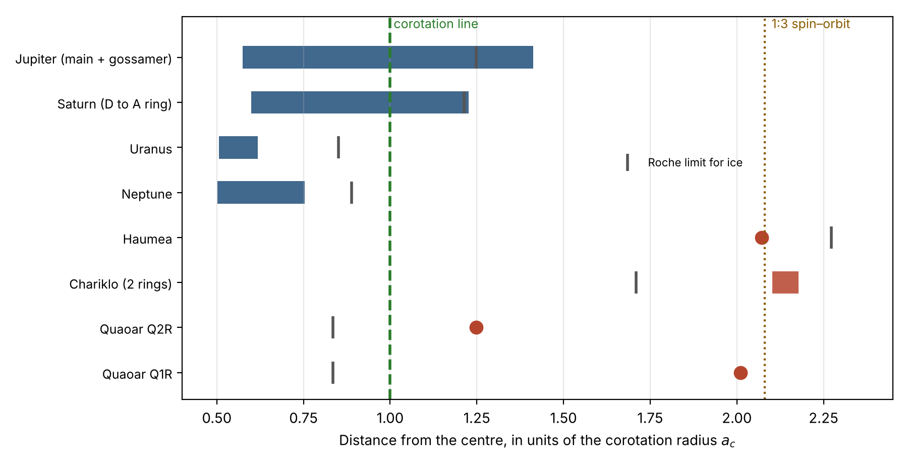
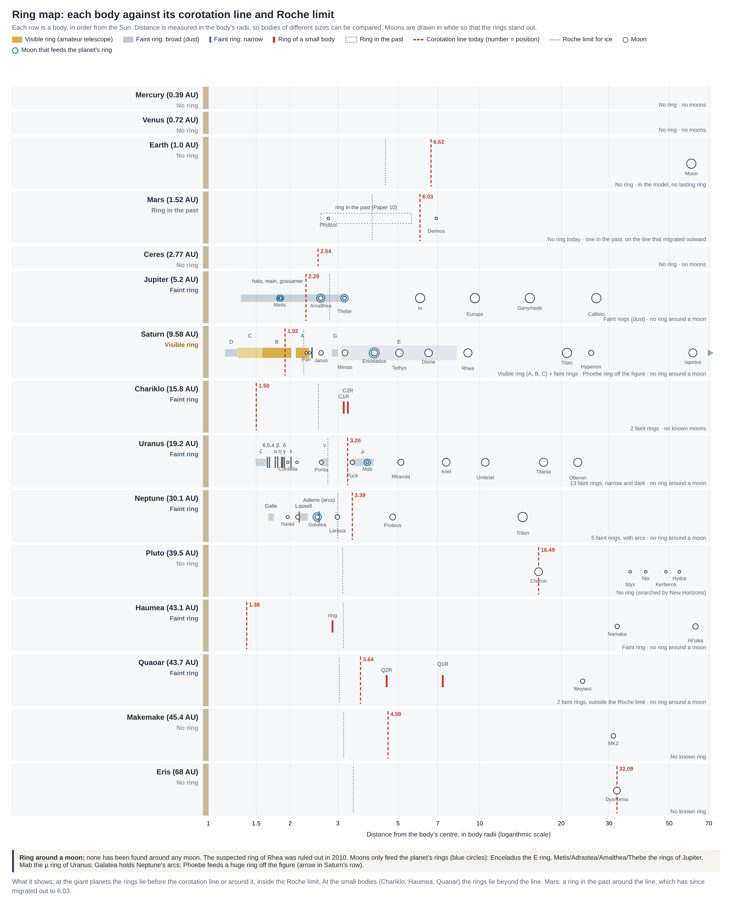
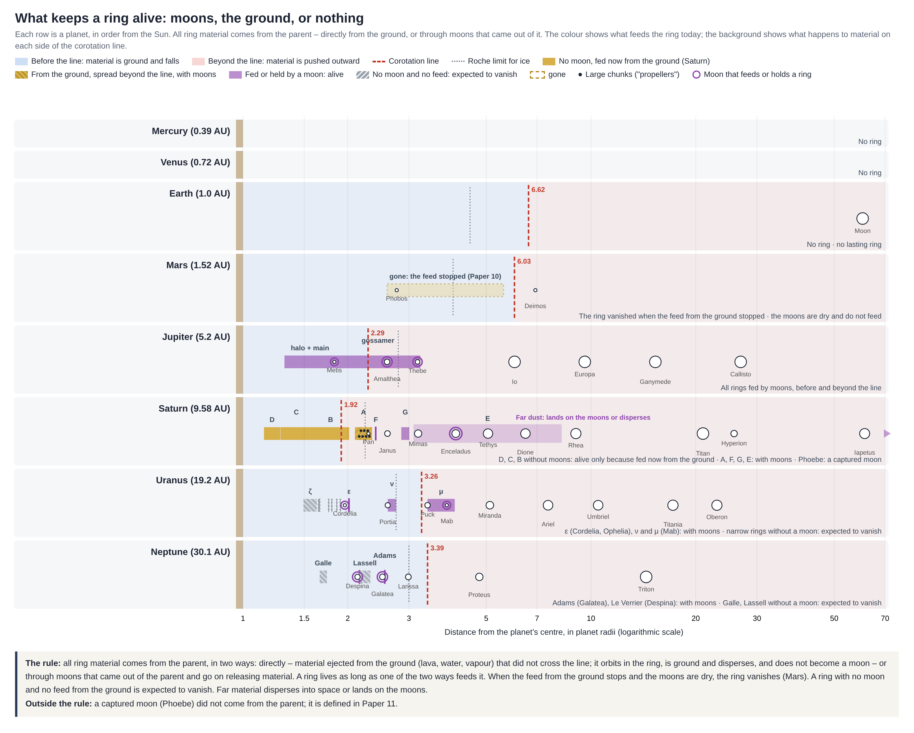
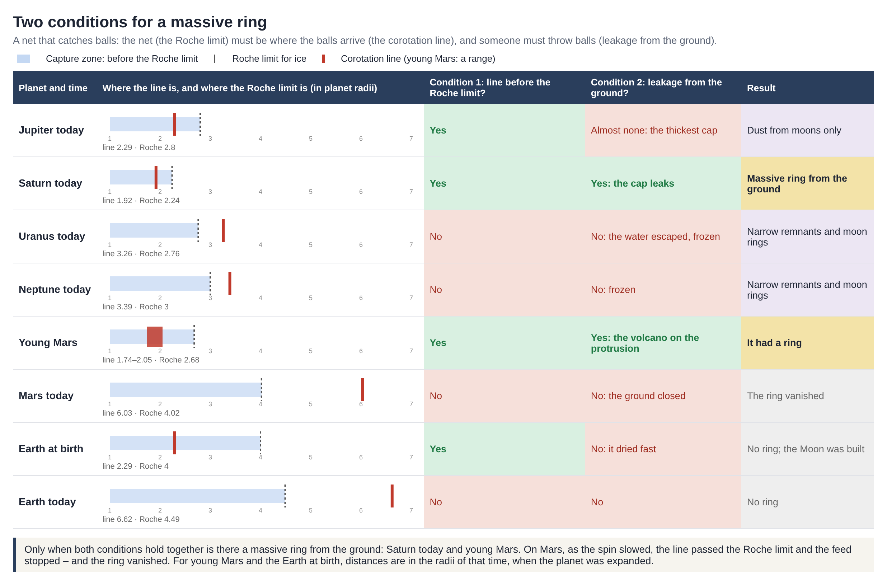
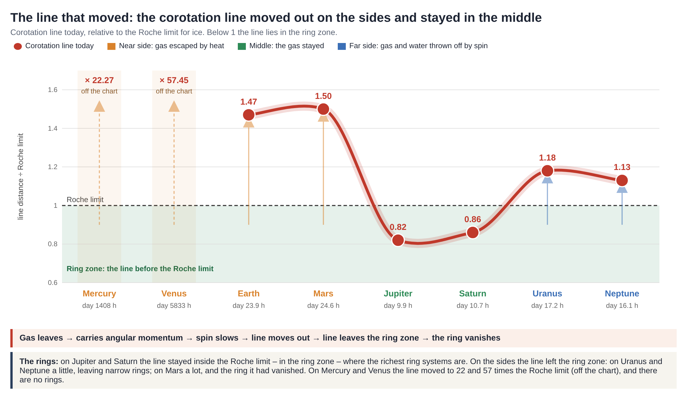

12. वलय
वलय तोड़ता है, घिसता है और लौटाता है: पदार्थ का स्रोत, उसकी गतिकी, और चंद्रमाओं तथा जनक ग्रह पर उसके चिह्न
सारांश
इस शोध-शृंखला में स्थापित किया गया कि ग्रहीय वलय अभिवृद्धि का वह स्थान नहीं है जहाँ चंद्रमा बनते हैं, बल्कि घिसने और विघटन की एक क्रियाविधि है [लेख 11]। यह लेख इस सिद्धांत को वलय-तंत्रों के एक एकीकृत भौतिक और गतिक मॉडल तक विस्तारित करता है, जो पदार्थ का स्रोत, वलय के बने रहने की शर्तें, द्रव्यमान-गति की क्रियाविधियाँ, तथा चंद्रमाओं और जनक ग्रह पर आकारिकीय चिह्न निर्धारित करता है।
1. वलय के द्रव्यमान का स्रोत: ग्रहीय वलय का सारा पदार्थ जनक पिंड से आता है, दो यांत्रिक मार्गों से:
• प्रत्यक्ष आपूर्ति: जनक पिंड की सतह से निकला पदार्थ (लावा, पानी और भाप) जिसने सह-घूर्णन रेखा पार नहीं की; यह द्रव्यमान कक्षा में फँस जाता है, घिसता है और फैल जाता है, पर चंद्रमा में संघनित नहीं होता।
• द्वितीयक आपूर्ति: जनक पिंड से जन्मे चंद्रमाओं द्वारा निकाला गया पदार्थ जो तंत्र को आपूर्ति करता रहता है (पकड़े गए चंद्रमा इस नियम से बाहर हैं)।
शनि के वलय — 95%–99% जल-बर्फ से बने, कुल द्रव्यमान एक पतली विषुवतीय चक्रिका में — ग्रह के भीतर से आते हैं, और पकड़ी गई अंतरग्रहीय धूल का उत्पाद नहीं हैं।
2. वलय के अस्तित्व का समीकरण (गतिक संतुलन): वलय-तंत्र तब तक बना रहता है जब तक उसे लगातार द्रव्यमान मिलता रहे। शनि पर ग्रह की ओर द्रव्यमान का निष्कासन ("वलय-वर्षा") मापा गया; पदार्थ की आपूर्ति के बिना वलय-तंत्र 1.1 करोड़ से 1.1 अरब वर्षों में विघटित होकर लुप्त हो जाएगा। अतः वलय भीतर से पोषित एक स्थिर-अवस्था प्रवाह है जो संतुलन में है, और इसकी संचित लागत शनि के द्रव्यमान के लगभग एक लाखवें भाग () तक है। मंगल पर द्रवगतिक पंप के रुकने और चंद्रमाओं के सूखने से वलय लुप्त हो गया। जिस वलय को न प्रत्यक्ष आपूर्ति मिलती है न किसी चंद्रमा से (जैसे यूरेनस के बिना-चंद्रमा वाले संकरे वलय, और नेपच्यून के गाले और लासेल वलय), वह मिटने के लिए अभिशप्त है।
3. विशाल वलय बनने की दो शर्तें:
• गतिक-ज्यामितीय शर्त: सह-घूर्णन रेखा रोश सीमा के भीतर होनी चाहिए ()। दोनों समीकरणों की तुलना करने पर जनक पिंड का घनत्व कट जाता है और सभी खगोलीय पिंडों के लिए एक समान क्रांतिक घूर्णन-काल मिलता है: (आवश्यक )।
• ऊष्मागतिक-संरचनात्मक शर्त: जनक ग्रह की सतह या आवरण से पदार्थ का सक्रिय रिसाव।
केवल आज का शनि और प्रारंभिक मंगल दोनों कसौटियाँ एक साथ पूरी करते हैं। बृहस्पति गति की शर्त () पूरी करता है, पर उसका मोटा गैस-आवरण पानी के रिसाव को रोकता है; यूरेनस और नेपच्यून बहुत धीमे हैं और जमे हुए हैं। गैस और बर्फ़ीले दानवों के वलय सह-घूर्णन रेखा के भीतर या उसके आसपास हैं, जबकि छोटे पिंडों के वलय उसके ऊपर, 1:3 कक्षीय अनुनाद की त्रिज्या के पास हैं।
4. पानी के पलायन से कोणीय संवेग की हानि: यूरेनस और नेपच्यून पर सह-घूर्णन रेखा त्रिज्यीय रूप से बाहर की ओर खिसकी। आज के चंद्रमा ग्रहों द्वारा खोए कोणीय संवेग का केवल 1% (यूरेनस) और 0.002% (नेपच्यून) ही समझाते हैं। सह-घूर्णन रेखा से निकले पानी का द्रव्यमान यूरेनस के सभी चंद्रमाओं का 270 गुना था, और वह अंतरिक्ष में फेंक दिया गया। यह भारी जल-हानि बर्फ़ीले दानवों के पतले वायुमंडलीय ढक्कन और कम पलायन वेग के कारण है, तापमान की स्थितियों के कारण नहीं।
5. चंद्रमाओं पर आकारिकीय चिह्न: बर्फ़ का वलय द्रव्यमान का जमाव करता है (पैन, एटलस और डैफ़्निस पर विषुवतीय कटक का बनना), जबकि सिलिकेट वलय यांत्रिक घिसाव करता है (डीमोस लंबे समय तक मंगल के वलय के हृदय में रहा और घिस गया, जबकि फ़ोबोस उसके निचले किनारे से गुज़रा और केवल आंशिक रूप से घिसा)। सौरमंडल में किसी भी चंद्रमा के चारों ओर कोई वलय नहीं मिला है।
मात्रात्मक आवश्यकताएँ, भविष्यवाणियाँ और खंडन-कसौटियाँ भाग L में संक्षेपित हैं।
यह लेख क्या प्रस्तावित करता है
• केंद्रीय प्रस्थापना: ग्रहीय वलय एक चक्रीय द्रव्यमान-प्रवाह की मध्यवर्ती अवस्था है जो जनक ग्रह से निकलता है और उसी में लौट आता है। वलय का सारा पदार्थ जनक पिंड से आता है (सीधे धरातल से या आदिम चंद्रमाओं के माध्यम से), और जब तक पदार्थ की आपूर्ति जारी रहती है, वलय स्थिर रहता है। वलय चंद्रमा नहीं बनाता, पर अपने से गुज़रने वाले चंद्रमाओं की आकारिकी को नया रूप देता है। विशाल वलय तभी बनता है जब जनक पिंड का घूर्णन-काल 13.4 घंटे से कम हो और भीतरी पर्पटी रिसती हो।
• मुख्य समीकरण और प्राचल:
• सह-घूर्णन रेखा की स्थिति:
• बर्फ़ के कणों के लिए रोश सीमा:
• विशाल वलय के लिए क्रांतिक घूर्णन-काल:
• शनि पर वलय-वर्षा की दर:
• शनि के वलयों का द्रव्यमान:
कार्य-परिवेश
| भौतिक राशि | मापा / परिकलित मान | स्रोत |
|---|---|---|
| शनि के वलयों का द्रव्यमान | (माइमस के द्रव्यमान का लगभग 40%) | Iess et al. 2019 |
| शनि के A और B वलयों की संरचना | 95%–99% जल-बर्फ | Cuzzi et al. 2010 |
| वलयों की ऊर्ध्वाधर मोटाई | सघन वलय: लगभग ; E वलय: हज़ारों किलोमीटर | Cuzzi et al. 2010 |
| उदासीन वलय-वर्षा (विषुवत की ओर) | Waite et al. 2018 | |
| आयनित वलय-वर्षा (क्षेत्र-रेखाओं के साथ) | O'Donoghue et al. 2019 | |
| सह-घूर्णन रेखा (ग्रह-त्रिज्याओं में) | बृहस्पति: ; शनि: ; यूरेनस: ; नेपच्यून: | परिकलन [भाग A.3] |
| गर्तों के गहराई-चौड़ाई अनुपात की माध्यिका | डीमोस: ; फ़ोबोस: | Ernst et al. 2023; लेख 10 |
PART Aभूमिका — हर ग्रह के चारों ओर दो रेखाएँ
A.1शोध-प्रश्न
सौरमंडल के चारों गैस और बर्फ़ीले दानवों के पास वलय-तंत्र हैं, पर उनके भौतिक गुण पूरी तरह भिन्न हैं: शनि के वलय विशाल और उच्च परावर्तकता वाले हैं, बृहस्पति के वलय क्षीण और धूल से बने हैं, और यूरेनस व नेपच्यून के वलय संकरे और गहरे रंग के हैं। इसके अलावा, सौरमंडल के छोर पर तीन छोटे पिंडों (हौमिया, कैरिक्लो, क्वाओआर) के पास सघन वलय हैं, जिनमें से एक रोश सीमा से बहुत दूर है। भीतरी ग्रहों के पास आज वलय नहीं हैं, पर मंगल के पास एक प्रारंभिक वलय-तंत्र था [लेख 10; Ćuk et al. 2020]। सौरमंडल में किसी भी चंद्रमा के चारों ओर कोई वलय नहीं मिला है।
लेख 11 ने सह-घूर्णन रेखा को वह अक्ष स्थापित किया जिसके चारों ओर चंद्रमा बनते हैं, और वलय को यांत्रिक घिसाव और विघटन का स्थान परिभाषित किया। यह भाग जाँचता है कि सह-घूर्णन रेखा और रोश सीमा के बीच की ज्यामितीय और गतिक अंतःक्रिया वलय की स्थिति, उसकी रासायनिक संरचना, उसकी आयु, और उससे गुज़रने वाले पिंडों पर उसके संरचनात्मक प्रभाव को कैसे निर्धारित करती है।
A.2सह-घूर्णन रेखा और रोश सीमा
• सह-घूर्णन रेखा (समकालिक त्रिज्या): जनक ग्रह के केंद्र से वह त्रिज्यीय दूरी जिस पर परिक्रमा करता पिंड ग्रह के घूर्णन-काल के बराबर समय में एक चक्कर पूरा करता है:
• रेखा के भीतर (): कक्षीय कोणीय वेग जनक पिंड की घूर्णन-दर से अधिक होता है। ग्रह में बना ज्वारीय उभार परिक्रमा करते पिंड से पीछे रह जाता है, उसे धीमा करता है और उसे त्रिज्यीय रूप से भीतर की ओर खिसकने पर विवश करता है।
• रेखा के बाहर (): कक्षीय कोणीय वेग जनक पिंड की घूर्णन-दर से कम होता है। ज्वारीय उभार पिंड से आगे रहता है, उसे त्वरित करता है और त्रिज्यीय रूप से बाहर धकेलता है [लेख 11, A.6]।
• रोश सीमा (): वह त्रिज्यीय दूरी जिसके भीतर जनक पिंड के विभेदी ज्वारीय बल किसी नरम पिंड के स्व-गुरुत्व पर भारी पड़ते हैं और द्रवस्थैतिक संघनन को रोकते हैं। जल-बर्फ के कणों के लिए सीमा इस समीकरण से दी जाती है:
जहाँ ग्रह की त्रिज्या, उसका औसत घनत्व, और बर्फ़ का घनत्व है।
A.3वलय कहाँ स्थित हैं
वलयों की स्थितियों और रोश सीमा को सह-घूर्णन त्रिज्या () से सामान्यीकृत करने पर भिन्न द्रव्यमान और घूर्णन-दर वाले पिंडों की एक एकीकृत गतिक पैमाने पर सीधी तुलना संभव होती है:
| जनक पिंड | सह-घूर्णन रेखा () | वलयों का परास () | की इकाइयों में वलयों की स्थिति | की इकाइयों में बर्फ़ की रोश सीमा | रेखा के सापेक्ष स्थिति |
|---|---|---|---|---|---|
| बृहस्पति | 160,000 | 92,000–226,000 (प्रभामंडल, मुख्य, गॉसमर) | 1.25 | रेखा के आसपास | |
| शनि | 111,600 | 66,900–136,800 (D से A वलय तक) | 1.21 | रेखा के आसपास; बाहरी किनारा रोश सीमा पर | |
| यूरेनस | 82,700 | 41,800–51,100 | 0.85 | रेखा के भीतर | |
| नेपच्यून | 83,500 | 41,900–62,900 | 0.89 | रेखा के भीतर | |
| हौमिया | 1,104 | 2,287 | 2.07 | 2.27 | रेखा के बाहर |
| कैरिक्लो | 186 | 391; 405 | 2.10; 2.18 | 1.71 | रेखा के बाहर |
| क्वाओआर | 2,020 | 2,520; 4,057 | 1.25; 2.01 | 0.83 | रेखा के बाहर; दोनों रोश सीमा से बाहर |
आँकड़े दो अलग गतिक परिवारों में स्पष्ट विभाजन दिखाते हैं (चित्र A.1 और A.2):
1. गैस और बर्फ़ीले दानवों का परिवार: वलय सह-घूर्णन रेखा के भीतर हैं या उसे पार करते हैं (), अधिकांशतः रोश सीमा के भीतर; रेखा के भीतर का भाग अंदर की ओर खिसकता है और जनक ग्रह पर गिरता है। शनि पर A वलय का बाहरी किनारा () बर्फ़ की रोश सीमा () से लगभग ठीक मेल खाता है।
2. छोटे पिंडों (बौने ग्रह और सेंटॉर) का परिवार: वलय सह-घूर्णन रेखा से बहुत बाहर हैं (), उस क्षेत्र में जहाँ ज्वारीय सदिश द्रव्यमान को बाहर धकेलता है। अधिकांश के पास जमा हैं — 1:3 घूर्णन-कक्षा अनुनाद की ठीक त्रिज्या, जहाँ वलय का एक कण एक परिक्रमा पूरी करता है जबकि जनक पिंड अपनी धुरी पर तीन बार घूमता है [Sicardy et al. 2019]।


PART Bपदार्थ का स्रोत
B.1भीतर से रिसाव
लेख 11 में विकसित मॉडल के अनुसार, विभेदन पानी और हल्के वाष्पशील पदार्थों को ग्रह की गहराई से ऊपर धकेलता है (पंप का सिद्धांत), जबकि वायुमंडलीय गैस-आवरण उन्हें रोके रखता है (ढक्कन का सिद्धांत)। यह बंधन पूरी तरह वायुरुद्ध नहीं है: द्रव्यमान का एक भाग सह-घूर्णन रेखा के क्षेत्र में रिसता है, रोश सीमा के भीतर फँस जाता है और वलय-तंत्र को पोषण देता है। यह क्रियाविधि तब तक वलय का निरंतर नवीकरण सुनिश्चित करती है जब तक विभेदन जारी रहे और निकास सक्रिय रहे।
प्रारंभिक मंगल-तंत्र में वलय को उभार पर स्थित ज्वालामुखीय निकास से पोषण मिला। जब तक पर्पटी की श्यानता कम थी और वह वाष्पशील पदार्थों को निकलने देती थी, वलय को भारी द्रव्यमान मिलता रहा। जब घूर्णन धीमा हुआ, छँटाई आगे बढ़ी और ठंडी पर्पटी मोटी हुई, तो पंप का निकास बंद हो गया, आपूर्ति रुक गई और वलय मिट गया [लेख 10]।
B.2अंतरग्रहीय धूल को स्रोत के रूप में बाहर करना
• रासायनिक शुद्धता: शनि के A और B वलय 95%–99% शुद्ध जल-बर्फ से बने हैं [Cuzzi et al. 2010]। अंतरग्रहीय धूल सिलिकेट, कार्बन और धातुओं का गहरे रंग का मिश्रण है; यदि वलय अंतरिक्ष-धूल से बने होते, तो उनकी परावर्तकता शुरू से ही कम होती।
• बाहरी संदूषण की क्रियाविधि: कैसिनी के आँकड़ों ने वलयों पर सूक्ष्म उल्काओं के गिरने की दर सीधे मापी [Kempf et al. 2023]। अंतरिक्ष-धूल मौजूदा वलय को दूषित करती है और उसकी निर्माण-सामग्री नहीं है। गहरे C वलय और चमकीले A व B वलयों के बीच परावर्तकता का अंतर समान संदूषण-दर पर ही उत्पन्न होता है: कम द्रव्यमान वाला वलय सघन वलय की तुलना में जल्दी गहरा होता है [Cuzzi & Estrada 1998]।
• द्रव्यमान-वितरण और ज्यामिति: का द्रव्यमान कुछ दसियों मीटर ऊर्ध्वाधर मोटाई वाली पतली विषुवतीय चक्रिका में केंद्रित है। सभी दिशाओं से (समदैशिक रूप से) आने वाली धूल कोई साझा कोणीय-संवेग सदिश नहीं रखती और एक अकेली समतल विषुवतीय चक्रिका में नहीं बैठ सकती; इसके लिए जनक ग्रह के साथ समकालिक रूप से घूमता एक आंतरिक स्रोत चाहिए।
• वायुमंडलीय ढक्कन की मोटाई से संबंध: शनि पर मोटा गैस-आवरण पानी को रोके रखता है और लगभग पूर्णतः शुद्ध बर्फ़ का वलय बनाता है। यूरेनस और नेपच्यून पर ढक्कन पतला है और पानी सह-घूर्णन रेखा से निकल गया [लेख 11, A.9], जिससे संकरे और गहरे वलय बचे। बृहस्पति पर, जहाँ ढक्कन विशेष रूप से मोटा है, वलय क्षीण धूल से बने हैं जिसे केवल भीतरी चंद्रमा पोषण देते हैं [Owen et al. 1979]। मंगल पर वलय संघनित भाप और पर्पटी के सिलिकेट पदार्थ से बना था [लेख 10]।
B.3वलय को पोषण देने वाला चंद्रमा
शनि के E वलय को एन्सेलाडस द्वारा छोड़े गए जल-वाष्प और बर्फ़ के फव्वारों से सीधा पोषण मिलता है। बृहस्पति पर भीतरी चंद्रमा मेटिस, एड्रास्टिया, अमाल्थिया और थीबे वह धूल छोड़ते हैं जो वलय-तंत्र को पोषण देती है। पदार्थ केवल एक दिशा में बहता है: चंद्रमा वलय को पोषण देता है, और वलय चंद्रमा नहीं बनाता।
B.4आपूर्ति के दो मार्ग और वलय के बने रहने की शर्त
वलय-तंत्रों का सारा पदार्थ दो यांत्रिक मार्गों से जनक पिंड को छोड़ता है:
1. प्रत्यक्ष आपूर्ति: जनक पिंड की सतह से निकला पदार्थ (लावा, पानी, भाप और धूल) जो सह-घूर्णन रेखा के भीतर रहता है। यह पदार्थ कक्षा में फँसता है, घिसता है और फैल जाता है, पर चंद्रमा में संघनित नहीं होता। इसी मार्ग से शनि के D, C और B वलय (जिनके चंद्रमा नहीं हैं) पोषित होते हैं, और इसी तरह प्रारंभिक मंगल-वलय पोषित हुआ था [लेख 10]।
2. चंद्रमाओं के माध्यम से आपूर्ति: जनक पिंड से जन्मे आदिम चंद्रमा जो द्रव्यमान छोड़ते रहते हैं। एन्सेलाडस पानी के फव्वारों से E वलय को पोषण देता है; मेटिस, एड्रास्टिया, अमाल्थिया और थीबे सूक्ष्म-उल्का प्रहारों से उखड़ी धूल से बृहस्पति के वलयों को पोषण देते हैं [Burns et al. 1999]; चंद्रमा मैब यूरेनस के वलय को पोषण देता है।
वलय तब तक बना रहता है जब तक उसे दोनों में से किसी भी मार्ग से पोषण मिलता रहे। चंद्रमा तभी स्रोत बनता है जब वह भूवैज्ञानिक रूप से सक्रिय हो या धूल छोड़ता हो; सूखे, स्थिर चंद्रमा (जैसे फ़ोबोस और डीमोस) वलयों को पोषण नहीं देते। जब धरातल से आपूर्ति रुक जाती है और चंद्रमा सूखे होते हैं, तो वलय मिट जाता है — यही क्रियाविधि मंगल के वलय के लुप्त होने को समझाती है। जिस वलय को न कोई चंद्रमा पोषण देता है न धरातल से रिसाव होता है, वह जन्म के बाद की अवस्था में है और उसके लुप्त होने की अपेक्षा है (F.3)।
• दूर की धूल के फैलने की गतिकी: ग्रह के साथ घूमता चुंबकित प्लाज़्मा सह-घूर्णन रेखा से परे की धूल को त्रिज्यीय रूप से बाहर धकेलता है; बड़ी दूरियों पर सूर्य का विकिरण-कर्षण (पॉइंटिंग–रॉबर्टसन प्रभाव) कणों को धीमा करता है और उन्हें वापस भीतर लाता है। इस प्रकार फ़ीबी वलय की धूल आयपेटस के अग्रगामी गोलार्ध पर जमती है और उसका गहरा पक्ष बनाती है [Verbiscer et al. 2009], और E वलय की धूल माइमस, टेथिस, डायोनी और रिया की सतहों को ढकती है [Verbiscer et al. 2007]।
• पकड़े गए चंद्रमाओं के लिए एक अपवाद: बाहर से पकड़ा गया चंद्रमा (लेख 11 के अंक-प्रोटोकॉल L.3 के अनुसार) जनक पिंड के पदार्थ-चक्र का भाग नहीं है; इसलिए फ़ीबी वलय (जो एक पकड़े गए चंद्रमा से जुड़ा है) मॉडल से बाहर रखा गया है।

– सुनहरा: धरातल से पोषित, बिना चंद्रमा (शनि)।
– सुनहरी धारियाँ: धरातल से, रेखा के पार फैला, चंद्रमाओं और बड़े खंडों के साथ (A वलय)।
– बैंगनी: चंद्रमा द्वारा पोषित या थामा हुआ।
– धूसर धारियाँ: न चंद्रमा न आपूर्ति, लुप्त होने की अपेक्षा।
– बिंदुदार फ़्रेम: लुप्त।
पृष्ठभूमि: सह-घूर्णन रेखा से पहले नीला, जहाँ पदार्थ घिसता और गिरता है; उसके बाद गुलाबी, जहाँ पदार्थ बाहर धकेला जाता है।
B.5विशाल वलय बनने की दो शर्तें
जनक पिंड के धरातल से सीधे पोषित विशाल वलय का अस्तित्व दो भौतिक कसौटियों के एक साथ पूरा होने पर निर्भर है (जाल और गेंदों की तरह — जाल सही जगह पर होना चाहिए, और द्रव्यमान फेंका जाना चाहिए):
• शर्त 1 — सह-घूर्णन रेखा रोश सीमा के भीतर है (): सतह से निकला पदार्थ सह-घूर्णन रेखा के क्षेत्र तक पहुँचता है (B.1)। यदि रेखा रोश सीमा के भीतर है, तो विभेदी ज्वारीय बल द्रवस्थैतिक संघनन रोकते हैं और द्रव्यमान वलय बना रहता है। यदि रेखा रोश सीमा से बाहर है, तो पदार्थ वलय के रूप में नहीं फँसता। सह-घूर्णन रेखा के समीकरण को रोश सीमा के समीकरण से भाग देने पर ग्रह का घनत्व () पूरी तरह कट जाता है:
जहाँ जनक पिंड का घूर्णन-काल (दिन) है और । इससे एक सार्वभौमिक नियम निकलता है: सह-घूर्णन रेखा रोश सीमा के भीतर तभी और केवल तभी होती है जब जनक पिंड का दिन 13.4 घंटे से छोटा हो — पिंड के द्रव्यमान, त्रिज्या या सतही गुरुत्व से निरपेक्ष (बृहस्पति का गुरुत्व सबसे प्रबल है; शनि का गुरुत्व पृथ्वी जैसा है)।
• शर्त 2 — धरातल से सक्रिय रिसाव: वायुमंडलीय गैस-आवरण ग्रह के भीतरी भाग को पूरी तरह सील नहीं करता, और बाहरी परत न पूरी तरह जमी है न ऊष्मीय रूप से सूखी।
सौरमंडल में विशाल वलय की शर्तों का आव्यूह
| ग्रह और युग | दिन (घंटे) | रेखा की स्थिति () | बर्फ़ की रोश सीमा () | शर्त 1 () | शर्त 2 (धरातल से रिसाव) | गतिक परिणाम |
|---|---|---|---|---|---|---|
| आज का शनि | 10.6 | 1.92 | 2.24 | हाँ | हाँ: ढक्कन रिसता है | धरातल से विशाल वलय |
| युवा मंगल | 7–9 | 1.74–2.05 | 2.68 | हाँ | हाँ: उभार पर ज्वालामुखी | प्रारंभिक वलय था |
| आज का बृहस्पति | 9.9 | 2.29 | 2.80 | हाँ | लगभग नहीं (सबसे मोटा ढक्कन) | केवल चंद्रमाओं से धूल-वलय |
| जन्म के समय पृथ्वी | 5.8 | 2.29 | 4.02 | हाँ | नहीं: तेज़ी से सूख गई | वलय नहीं; चंद्रमा बना |
| आज का यूरेनस | 17.2 | 3.26 | 2.76 | नहीं | नहीं: पानी निकल गया, जम गया | संकरे अवशेष और चंद्रमा-वलय |
| आज का नेपच्यून | 16.1 | 3.39 | 3.00 | नहीं | नहीं: जम गया | संकरे अवशेष और चंद्रमा-वलय |
| आज का मंगल | 24.6 | 6.03 | 4.02 | नहीं | नहीं: धरातल बंद हो गया | वलय लुप्त हो गया |
| आज की पृथ्वी | 23.9 | 6.62 | 4.49 | नहीं | नहीं | वलय नहीं |
• आव्यूह का विश्लेषण: धरातल से पोषित विशाल वलय तभी बनता है जब दोनों शर्तें एक साथ पूरी हों — आज का शनि और युवा मंगल। बृहस्पति का घूर्णन शर्त 1 पूरी करता है, पर मोटा वायुमंडलीय ढक्कन पानी का रिसाव रोकता है। पृथ्वी ने जन्म के क्षण में शर्त 1 पूरी की, पर उसके ऊष्मीय सूखेपन ने वलय को पोषण नहीं मिलने दिया। यूरेनस और नेपच्यून 16–17 घंटे के दिन से घूमते हैं (13.4 घंटे की दहलीज़ से ऊपर), उनकी सह-घूर्णन रेखा रोश सीमा से बाहर है, और जमी हुई पर्पटी निष्कासन रोकती है। मंगल दो-चरणीय पतन दिखाता है: घूर्णन के धीमे होने ने रेखा को रोश सीमा से बाहर धकेला, पर्पटी के बंद होने ने आपूर्ति रोकी, और वलय लुप्त हो गया। लेख 11 के चंद्र-जन्मों के चाप की तरह, वलय-तंत्र शनि पर अपने शिखर पर पहुँचते हैं — सूखने से बचने (सूर्य के पास) और जमने से बचने (सूर्य से दूर) के बीच संतुलन के कारण।

चित्र B.3 पूरे सौरमंडल में पहली शर्त दिखाता है। आज की सह-घूर्णन रेखा रोश सीमा के सापेक्ष एक U बनाती है: बृहस्पति और शनि पर रेखा रोश सीमा के भीतर है (0.82 और 0.86), जहाँ सबसे समृद्ध वलय-तंत्र हैं। दोनों किनारों पर रेखा वलय-क्षेत्र से बाहर निकल गई है — यूरेनस और नेपच्यून पर थोड़ा (1.18 और 1.13), जहाँ संकरे वलय बचे, और मंगल (1.50) पर बहुत, जिसका वलय लुप्त हो गया, और पृथ्वी (1.47) पर भी; बुध और शुक्र पर 22 और 57 गुना। हम प्रस्तावित करते हैं कि किनारों पर रेखा इसलिए बाहर खिसकी क्योंकि द्रव्यमान — गैस और पानी — रेखा से निकल गया और कोणीय संवेग साथ ले गया: निकट वाले किनारे पर युवा सूर्य की ऊष्मा के कारण, दूर वाले किनारे पर घूर्णन के कारण। बीच में मोटा गैस-ढक्कन बना रहा और घूर्णन तेज़ बना रहा। सभी प्राचलों के साथ ग्रह-दर-ग्रह परिकलन लेख 11 (खंड L.1, सारणी L.1) में है।

PART Cवलय तोड़ता और घिसता है, बनाता नहीं
C.1रोश सीमा के भीतर की गतिकी
रोश सीमा के भीतर जनक पिंड के विभेदी ज्वारीय प्रतिबल वलय-कणों के स्व-गुरुत्व पर भारी पड़ते हैं और द्रवस्थैतिक संघनन रोकते हैं। जो भी विशाल पिंड रोश सीमा को भीतर की ओर पार करता है, वह यांत्रिक रूप से चीर दिया जाता है और आपसी टक्करों में बजरी और धूल में पीस दिया जाता है। शनि का A वलय ठीक बर्फ़ की रोश सीमा पर समाप्त होता है, और उस रेखा से परे वलय-पदार्थ से कोई चंद्रमा संघनित नहीं हुआ है।
C.2रोश सीमा के बाहर की गतिकी
बौने ग्रह क्वाओआर का बाहरी वलय की दूरी पर है, जो बर्फ़ की रोश सीमा का 2.4 गुना है। शास्त्रीय मॉडलों के अनुसार इतनी दूरी पर पदार्थ को कुछ दशकों में चंद्रमा में संघनित हो जाना चाहिए, पर एक सघन, स्थिर वलय देखा जाता है [Morgado et al. 2023]। यह खोज एकीकृत क्रियाविधि से पूर्णतः संगत है: वलय चंद्रमा नहीं बनाता, उन जगहों पर भी जहाँ जनक पिंड के ज्वारीय बल संघनन नहीं रोकते। इसी प्रकार, सेंटॉर कैरिक्लो के वलय भी रोश सीमा से ठीक बाहर हैं।
C.3वलय-चंद्रमाओं की आकारिकी
शनि के वलय-तंत्र के भीतर और किनारे पर स्थित नन्हे चंद्रमा — पैन, डैफ़्निस, एटलस, प्रोमीथियस, पैंडोरा, जेनस और एपिमीथियस — का घनत्व बहुत कम, , है [Porco et al. 2007]। लेख 11 के अनुरूप, ये पिंड वलय-संघनन के उत्पाद नहीं हैं, बल्कि प्रारंभिक चंद्रमाओं के अवशेष हैं जो वलय में घिसे और चिकने हुए, और जिन पर वलय-पदार्थ की एक परत जम गई। किसी मौजूदा कोर पर द्रव्यमान का जमना नए चंद्रमा का जन्म नहीं है। क्रिडा और शार्नोज़ का सैद्धांतिक मॉडल, जिसमें वलय-चक्रिका के रोश सीमा से परे फैलने पर चंद्रमा संघनित होते हैं, केवल संख्यात्मक अनुकार पर आधारित है और किसी प्रेक्षणीय खोज से समर्थित नहीं है।
C.4विनाश के स्थान के रूप में वलय
विज़डम और सहयोगियों का मॉडल, जिसके अनुसार शनि के वलय तब बने जब एक प्रारंभिक चंद्रमा रोश सीमा के भीतर आकर विघटित हो गया, एकीकृत क्रियाविधि के यांत्रिक सिद्धांत से मेल खाता है: ग्रहीय वलय वह स्थान है जहाँ चंद्रमा खोले और नष्ट किए जाते हैं, निर्माण-स्थल नहीं।
PART Dगतिकी — क्या लौटता है और क्या जाता है
D.1अधिकांश पदार्थ भीतर लौटता है
वलय-चक्रिका में भीतरी कक्षाओं के कण बाहरी कक्षाओं के कणों से अधिक कोणीय वेग से चलते हैं (विभेदी केप्लरीय गति)। अप्रत्यास्थ टक्करें कक्षीय ऊर्जा को ऊष्मा में बदलती हैं, जबकि चक्रिका का कुल कोणीय संवेग संरक्षित रहता है। दोनों संरक्षण-नियमों को एक साथ पूरा करने के लिए श्यान प्रसार अनिवार्य है: वलय का अधिकांश द्रव्यमान ऊर्जा खोकर भीतर जनक ग्रह की ओर बहता है, जबकि एक छोटा भाग त्रिज्यीय रूप से बाहर धकेला जाता है और अतिरिक्त कोणीय संवेग साथ ले जाता है [Lynden-Bell & Pringle 1974]। वलय एक गतिक कीप की तरह काम करता है जो अधिकांश पदार्थ जनक पिंड को लौटा देता है।
D.2रेखा विभाजित करती है
ग्रह के घूर्णन के साथ समकालिक रूप से काम करने वाली क्रियाविधियाँ सह-घूर्णन रेखा के भीतर के पदार्थ को धीमा कर भीतर गिराती हैं, और रेखा के बाहर के पदार्थ को बाहर धकेलती हैं। चंद्रमाओं और विशाल खंडों पर गुरुत्वीय ज्वारीय बल-आघूर्ण काम करते हैं; विद्युत-आवेशित धूल-कणों पर ग्रह का चुंबकीय क्षेत्र काम करता है, जो जनक पिंड के साथ घूमता है। सघन, विशाल वलय मुख्यतः एक सतत पिंड की तरह व्यवहार करता है जो यांत्रिक रूप से फैलता है (D.1)।
• धूल पर रेखा के प्रभाव का अनुभवजन्य प्रमाण: शनि के वलय-तंत्र में "तीलियों" की परिघटना B वलय के बाहरी भाग में, से के त्रिज्यीय क्षेत्र में दिखती है — एक सीमा जो सह-घूर्णन रेखा की स्थिति () से ठीक मेल खाती है [Callos et al. 2025]।
• किनारे के चंद्रमाओं को कोणीय संवेग का हस्तांतरण: वलय अपने किनारों के चंद्रमाओं को कोणीय संवेग देता है और उन्हें त्रिज्यीय रूप से बाहर धकेलता है [Goldreich & Tremaine 1980]। प्रारंभिक मंगल-तंत्र में इस क्रियाविधि ने डीमोस को बाहर धकेला, जबकि वलय के गैसीय भीतरी किनारे ने फ़ोबोस को सह-घूर्णन रेखा पर थामे रखा और उसे रेखा के साथ बाहर ले गया, जब तक कि वलय लगभग की त्रिज्या पर सूख नहीं गया [लेख 10]।
D.3शनि: एक स्थिर-अवस्था प्रवाह
कैसिनी अंतरिक्ष-यान के मापों ने शनि के वलयों से वायुमंडल में पदार्थ का गिरना दो समानांतर मार्गों से दर्ज किया: की दर से विषुवतीय तल की ओर बहता उदासीन पदार्थ [Waite et al. 2018], और की दर से चुंबकीय क्षेत्र-रेखाओं के साथ बहता आयनित पदार्थ [O'Donoghue et al. 2019]।
| द्रव्यमान-पतन दर () | आपूर्ति के बिना वलय के खाली होने का समय | 4.5 अरब वर्षों में आवश्यक कुल आपूर्ति | शनि के कुल द्रव्यमान का अंश |
|---|---|---|---|
| 432 | 1.1 अरब वर्ष | 4 वलय-द्रव्यमान | |
| 2,870 | 17 करोड़ वर्ष | 26 वलय-द्रव्यमान | |
| 4,800 | 10 करोड़ वर्ष | 44 वलय-द्रव्यमान | |
| 45,000 | 1.1 करोड़ वर्ष | 415 वलय-द्रव्यमान |
पदार्थ की आपूर्ति के बिना वलय-तंत्र सौरमंडल की आयु से कहीं कम समय में विघटित हो जाएगा; इस खोज ने साहित्य को यह निष्कर्ष निकालने पर प्रेरित किया कि वलय कालक्रमानुसार युवा हैं [Iess et al. 2019; Kempf et al. 2023]। एकीकृत क्रियाविधि के अनुसार वलय कोई स्थिर अवशेष नहीं, बल्कि गतिक संतुलन में एक स्थिर-अवस्था प्रवाह है: नीचे से रिसाव द्वारा लगातार नवीकृत होता है और ऊपर से वलय-वर्षा के रूप में खाली होता है। वलय का "युवा" रूप पदार्थ के निरंतर बदलते रहने से है, जबकि भूगतिक प्रक्रिया स्वयं प्राचीन है।
• स्थिर अवस्था में एक यांत्रिक आवश्यकता: जिस दर से द्रव्यमान जनक पिंड से वलय में निकलता है, वह ठीक उस दर के बराबर है जिससे वलय-वर्षा द्रव्यमान हटाती है। शनि के पूरे जीवनकाल में संचित द्रव्यमान-लागत अधिकतम ग्रह-द्रव्यमान के लगभग एक लाखवें भाग () तक पहुँचती है और द्रव्यमान-संरक्षण की सीमाओं के भीतर रहती है।
D.4कोणीय संवेग कहाँ गया: चंद्रमा या पानी
सह-घूर्णन रेखा का त्रिज्यीय पीछे हटना बताता है कि ग्रह ने कोणीय संवेग खोया। निम्न परिकलन जनक पिंड द्वारा जन्म-अवस्था से खोए कुल कोणीय संवेग की तुलना आज नियमित चंद्रमाओं के तंत्र में संचित कक्षीय कोणीय संवेग से करता है (जड़त्व-आघूर्ण गुणांक: यूरेनस के लिए , नेपच्यून के लिए ; पानी की मात्रा पर स्थित प्रारंभिक सह-घूर्णन रेखा से निष्कासन के लिए परिकलित है [लेख 11]):
| ग्रह | दिन में परिवर्तन | खोया कोणीय संवेग () | चंद्रमाओं का कक्षीय कोणीय संवेग () | हानि में चंद्रमाओं का अंश | रेखा से निकलने वाले पानी का आवश्यक द्रव्यमान |
|---|---|---|---|---|---|
| यूरेनस | (ग्रह-द्रव्यमान का लगभग ) | ||||
| नेपच्यून | (ग्रह-द्रव्यमान का लगभग ) | ||||
| बृहस्पति | चंद्रमा घूर्णन-कोणीय संवेग का लगभग वहन करते हैं | सब | आवश्यक नहीं | ||
| शनि | चंद्रमा घूर्णन-कोणीय संवेग का लगभग वहन करते हैं | सब | आवश्यक नहीं |
• यूरेनस और नेपच्यून: नियमित चंद्रमाओं का द्रव्यमान खोए कोणीय संवेग को वहन करने के लिए बहुत कम है; उसका अधिकांश भाग सह-घूर्णन रेखा पार करने वाले पानी और वाष्पशील पदार्थ ले गए। यूरेनस को छोड़ने वाले पानी का द्रव्यमान () उसके सभी नियमित चंद्रमाओं के कुल द्रव्यमान () का 270 गुना है। यदि यह पानी चंद्रमाओं में संघनित होता, तो कोणीय संवेग चंद्र-तंत्र में ही रहता; अतः पानी अंतरग्रहीय अंतरिक्ष में फेंक दिया गया। जन्म-त्रिज्या, संपीड्यता और चपटेपन सहित पूर्ण परिकलन लेख 11 (सारणी L.1) में है: द्रव्यमान का 1.6%–10.8%, पानी और गैस।
• बृहस्पति और शनि: सह-घूर्णन रेखा लगभग स्थिर रही, और अकेले चंद्रमा कोणीय संवेग के छोटे हस्तांतरण को समझा देते हैं — पानी के पलायन को रोकने वाले मोटे वायुमंडलीय ढक्कन से पूर्णतः संगत। वलय भी उल्लेखनीय कोणीय संवेग संचित नहीं करते: शनि के वलयों का द्रव्यमान उसके चंद्रमाओं के द्रव्यमान का लगभग दस-हज़ारवाँ भाग () है।
• सक्रिय चंद्रमा पर द्रव्यमान की वापसी: एन्सेलाडस के फव्वारों के अधिकांश बर्फ़-कण उसकी सतह पर हिम बनकर वापस गिरते हैं, और केवल एक नन्हा अंश निकलकर E वलय को पोषण देता है [Kempf et al. 2010]।
दूरस्थ बर्फ़ीले दानवों में जल-हानि की क्रियाविधि
भारी जल-हानि ठीक दूरस्थ बर्फ़ीले दानवों (यूरेनस और नेपच्यून) में हुई, भीतरी गैस-दानवों (बृहस्पति और शनि) में नहीं — यह तीन भौतिक कारकों से है:
1. वायुमंडलीय ढक्कन की मोटाई: सूर्य से दूरी ने आदि-ग्रहीय चक्रिका के बिखरने से पहले ठोस कोर की अभिवृद्धि का समय तय किया [लेख 11]। बृहस्पति (90%–97% गैस) और शनि (70%–85% गैस) ने एक मोटा वायुमंडलीय ढक्कन इकट्ठा किया जो पानी को भीतर रखता है, जबकि यूरेनस और नेपच्यून (10%–20% गैस) ने एक पतला ढक्कन रखा जो मुक्त रिसाव होने देता है।
2. पलायन वेग (विभव-कूप की गहराई): पलायन वेग को ग्रह के गुरुत्व से मुक्त होने के लिए आवश्यक न्यूनतम ऊर्जा-दहलीज़ के रूप में परिभाषित किया जाता है। बृहस्पति () और शनि () गहरे विभव-कूप हैं जो पानी को थामे रखते हैं, जबकि यूरेनस () और नेपच्यून () उथले कूप हैं जो उसी घूर्णी धक्के में पानी को पलायन-दहलीज़ पार करने देते हैं।
3. ऊष्मीय वाष्पन के बजाय यांत्रिक निष्कासन: पानी का पलायन ऊष्मीय विकिरण से संचालित नहीं था, बल्कि तीव्र घूर्णन की अवस्था (7–8 घंटे का दिन) में द्रव्यमान के यांत्रिक रूप से सह-घूर्णन रेखा तक उठने और अपकेंद्री धक्के से रेखा के पार जाने से था।
सूखने की क्रियाविधियों में भेद: सूर्य के पास (जैसे शुक्र पर) पानी पराबैंगनी विकिरण में प्रकाश-अपघटन से टूटता है और अपना हाइड्रोजन अंतरिक्ष में खो देता है; दूरस्थ गैस और बर्फ़ीले दानवों में निष्कासन वायुमंडलीय ढक्कन की मोटाई और गुरुत्वीय विभव-कूप की गहराई से निर्धारित होता है।
नियमित चंद्रमाओं के द्रव्यमान और जनक ग्रह के द्रव्यमान का अनुपात
| ग्रह-तंत्र | जनक पिंड के द्रव्यमान के अंश के रूप में नियमित चंद्रमाओं का द्रव्यमान |
|---|---|
| पृथ्वी | |
| बृहस्पति | |
| शनि | |
| यूरेनस | |
| नेपच्यून (पकड़े गए ट्राइटन के बिना) | |
| मंगल |
PART Eवलय में छँटाई
E.1टक्करों से छँटाई, गुरुत्वीय डूबने से नहीं
ग्रह के भीतर पदार्थ घनत्व के अनुसार गुरुत्वीय उठान और डूबने से अलग होता है। ग्रहीय वलय में एक ही कक्षीय त्रिज्या पर सघन और हल्का कण समान केप्लरीय वेग से चलते हैं, इसलिए डूबने से अलग नहीं होते। वलय में संरचनात्मक छँटाई टक्करों में संवेग-हस्तांतरण से होती है: विशाल, कठोर पिंड अपनी स्थिर कक्षा बनाए रखता है, जबकि हल्के या नरम कण गतिज धक्का पाते हैं, एक ओर धकेले जाते हैं और घिस जाते हैं।
E.2टक्कर-छँटाई के प्रेक्षणीय प्रमाण
• "प्रोपेलर" संरचनाएँ: शनि के A वलय में कैसिनी ने दर्जनों प्रोपेलर-आकार की संरचनाएँ दर्ज कीं, हर एक के केंद्र में लगभग व्यास का कठोर पिंड और दोनों ओर कई किलोमीटर लंबे पदार्थ-रहित पथ [Tiscareno et al. 2006]। ये संरचनाएँ A वलय में हैं, सह-घूर्णन रेखा से परे, जहाँ खंड ग्रह पर नहीं गिरते और हल्के कणों को एक ओर धकेलकर अपना मुक्त पथ बनाते हैं।
• चक्रिका की मोटाई: शनि के सघन वलयों में सेंटीमीटर से मीटर आकार के खंड लगभग मोटी पतली ऊर्ध्वाधर परत में केंद्रित हैं। नन्हे कण टक्करों में अधिक यादृच्छिक वेग पाते हैं और मोटी परत में फैल जाते हैं।
• आकार-वितरण: वलय में खंडों की बहुलता उनके व्यास () के साथ एक घात-नियम के अनुसार घटती है:
यह वितरण निरंतर यांत्रिक पिसाई और चूर्णन वाले तंत्र का स्पष्ट सांख्यिकीय चिह्न है [Zebker et al. 1985]।
• यूरेनस-तंत्र: सेंटीमीटर से मीटर आकार के खंडों के संकरे वलयों से बना है, जो महीन धूल की पट्टियों से अलग हैं।
E.3समय का तत्व: पिसाई की पट्टी के रूप में वलय
वलय में किसी खंड का आकार यह बताने वाला कालक्रमिक माप है कि वह तंत्र में कितने समय से है: बड़ा खंड एक युवा पिंड है जो अभी पूरी तरह घिसा नहीं। नन्हे चंद्रमाओं के आकार के खंड वलय में प्रवेश करते हैं, उसके भीतर विघटित होते हैं और धूल में पीस दिए जाते हैं। श्यान प्रसार की क्रियाविधि (D.1) के अनुसार पिसी हुई धूल का अधिकांश भाग भीतर जनक ग्रह की ओर बहता है, और एक छोटा भाग बाहर धकेला जाता है। वलय एक एकदिशीय वाहक-पट्टी की तरह काम करता है जिसमें बड़े खंड प्रवेश करते हैं और धूल बाहर निकलती है।
• एक संरचनात्मक भविष्यवाणी: वलय में बड़े, अक्षत खंडों की सबसे अधिक सांद्रता उस क्षेत्र के ठीक पास मिलेगी जहाँ वलय को पदार्थ की आपूर्ति होती है।
PART Fवलय का जीवन-चक्र
F.1रेखा का खिसकना वलयों को मिटा देता है
सह-घूर्णन रेखा की स्थिति जनक ग्रह की घूर्णन-दर पर निर्भर करती है। जब ग्रह धीमा होता है — किसी विशाल चंद्रमा के ज्वारीय बल-आघूर्ण से, या रेखा से निकलते पानी के कोणीय संवेग साथ ले जाने से — सह-घूर्णन रेखा त्रिज्यीय रूप से बाहर खिसकती है। जो द्रव्यमान पहले रेखा पर या उसके बाहर था, अब नई रेखा के भीतर आ जाता है; ज्वारीय बल उसे धीमा करते हैं और उसे भीतर खिसककर ग्रह पर गिरने पर विवश करते हैं। यदि साथ ही धरातल से पदार्थ की आपूर्ति रुक जाए, तो वलय-तंत्र खाली होकर लुप्त हो जाता है।
F.2वलय के विकास की अवस्थाएँ
1. आपूर्ति की अवस्था: सह-घूर्णन रेखा सतह के पास है, विभेदन सक्रिय है, और पदार्थ रिसकर रोश सीमा के भीतर फँसता है। वलय विशाल है (आज का शनि; प्रारंभिक मंगल)।
2. पतन की अवस्था: भीतरी छँटाई आगे बढ़ती है, पर्पटी मोटी होती है या ढक्कन रिसता है, आपूर्ति-दर घटती है, और सह-घूर्णन रेखा बाहर खिसकती है। रेखा के भीतर संकरे वलय बचते हैं (यूरेनस और नेपच्यून)।
3. लोप की अवस्था: धरातल से आपूर्ति रुक चुकी है और वलय का शेष भाग भीतर गिर चुका है। तंत्र में वह चंद्रमा बचता है जिसने रेखा पार की, और जनक पिंड पर गिरा द्रव्यमान (मंगल: धूल की परत और भीतर गिरता चंद्रमा फ़ोबोस [लेख 10])।
• पृथ्वी पर वलय नहीं: प्रारंभिक पृथ्वी पर कोई दीर्घजीवी वलय विकसित नहीं हुआ, क्योंकि चंद्रमा को बनाने वाले नाशपाती ने वह विषुवतीय पट्टी बुहार दी जिसमें वलय बनता, और उसका पदार्थ बनते हुए चंद्रमा में इकट्ठा कर लिया [लेख 10]।
F.3वलय जिनके लुप्त होने की अपेक्षा है
वलय के बने रहने के नियम (B.4) के अनुसार, जिस वलय-तंत्र को न कोई चंद्रमा पोषण देता है और न जनक पिंड के धरातल से निरंतर आपूर्ति मिलती है, वह मिटने के लिए अभिशप्त है:
| ग्रह | चंद्रमा से जुड़े वलय | बिना चंद्रमा के वलय | स्थिति और भूगतिक आकलन |
|---|---|---|---|
| शनि | A (पैन, डैफ़्निस), F (प्रोमीथियस, पैंडोरा), G (ईजियन), E (एन्सेलाडस) | D, C, B | D, C और B वलय केवल धरातल से सक्रिय आपूर्ति के कारण अस्तित्व में हैं; मापी गई वलय-वर्षा दर (D.3) दिखाती है कि उसके बिना वे लुप्त हो जाएँगे। |
| यूरेनस | (कॉर्डीलिया, ओफ़ीलिया), (पोर्शिया और रोज़लिंड के बीच), (मैब) | लुप्त होने की अपेक्षा। उन्हें थामने वाले छोटे चंद्रमा नहीं मिले (साहित्य में एक खुला प्रश्न)। | |
| नेपच्यून | एडम्स (गैलेटिया), ले वेरियर (डेस्पिना) | गाले, लासेल | लुप्त होने की अपेक्षा। |
| बृहस्पति | पूरा वलय-तंत्र | — | तब तक अस्तित्व में है जब तक भीतरी चंद्रमा धूल छोड़ते हैं। |
| मंगल | — | प्रारंभिक वलय | धरातल से आपूर्ति रुकने पर लुप्त हुआ; चंद्रमा सूखे हैं और पोषण नहीं देते। |
PART Gचंद्रमा पर वलय का चिह्न
G.1आकारिकीय पहचान का नियम
पूर्णतः चिकना सिलिकेट चंद्रमा बताता है कि वह लंबे समय तक किसी वलय-तंत्र में रहा।
डीमोस मंगल के परिवेश में देखा गया सबसे चिकना छोटा पिंड है। एर्न्स्ट और सहयोगियों के आकृति-मॉडलों का तुलनात्मक विश्लेषण, दोनों मंगल-चंद्रमाओं के लिए एक ही विधि से, दिखाता है कि डीमोस पर गर्तों की माध्यिका गहराई उनकी चौड़ाई का है, जबकि फ़ोबोस पर । डीमोस के गर्त अपनी चौड़ाई के से उथले हैं, जबकि फ़ोबोस पर केवल [लेख 10, J.1]। डीमोस की कक्षा लगभग पूर्णतः वृत्ताकार (उत्केंद्रता ) और विषुवतीय है। वृत्ताकार, विषुवतीय कक्षा और चिकनी स्थलाकृति का संयोग वलय के हृदय में लंबे प्रवास का स्पष्ट चिह्न है। फ़ोबोस घटते वलय के निचले किनारे से गुज़रा, इसलिए केवल आंशिक रूप से घिसा और अपनी खाँचों की प्रणाली बनाए रखी। पृथ्वी के पास कोई दीर्घजीवी वलय नहीं था, और तदनुसार चंद्रमा क्रेटरों से संतृप्त सतह दिखाता है।
ग्रहों के चंद्रमाओं में डीमोस पूर्णतः चिकने सिलिकेट चंद्रमा का एकमात्र उदाहरण है, और उसके जनक ग्रह के पास आज वलय नहीं है। चिकने बर्फ़ीले चंद्रमा (जैसे यूरोपा, एन्सेलाडस और ट्राइटन) भूवैज्ञानिक रूप से सक्रिय हैं और अपनी सतह नवीकृत करते हैं, इसलिए इस नियम से बाहर हैं।
G.2वलय की रासायनिक संरचना का प्रभाव
चंद्रमा की सतह पर आकारिकीय परिवर्तन का प्रकार वलय-पदार्थ की संरचना से निर्धारित होता है:
• बर्फ़ का वलय (जमाव की क्रियाविधि): ठंडे बर्फ़-कण पाले की परत से ढके होते हैं और कम सापेक्ष वेग के संपर्क में एक-दूसरे से चिपक जाते हैं [Bridges et al. 1984]। इसी क्रियाविधि ने पैन, एटलस और डैफ़्निस के उभरे विषुवतीय कटक बनाए, जो उन्हें "उड़नतश्तरी" का आकार देते हैं [Charnoz et al. 2007]।
• सिलिकेट वलय (घिसाव की क्रियाविधि): मंगल का प्रारंभिक वलय संघनित भाप और पर्पटी के सिलिकेट पदार्थ से बना था। कठोर सिलिकेट कण अपघर्षक की तरह काम करते हैं, इसलिए डीमोस बिना द्रव्यमान पाए चिकना और घिसा गया।
G.3गुरुत्व बनाम पदार्थ-संरचना
विशाल चंद्रमा अपने गुरुत्व-क्षेत्र से अपनी विषुवत पर जमा होने वाले पदार्थ को थामे रखता है। छोटे चंद्रमाओं में स्व-गुरुत्व का निर्णायक भार नहीं होता, और वलय-पदार्थ की संरचना तय करती है कि जमाव होगा या घिसाव:
| चंद्रमा | व्यास () | घनत्व () | सतही गुरुत्व () | वलय-परिवेश | आकारिकीय चिह्न |
|---|---|---|---|---|---|
| मेथोनी | 2.9 | 310 | 0.0001 | बर्फ़ (G वलय के पास चाप) | चिकना, ढका हुआ |
| डैफ़्निस | 7.6 | 340 | 0.0004 | बर्फ़ (A वलय) | विषुवतीय कटक |
| पैन | 28 | 400 | 0.0016 | बर्फ़ (A वलय) | विषुवतीय कटक |
| एटलस | 30 | 460 | 0.0019 | बर्फ़ (A वलय का किनारा) | विषुवतीय कटक |
| डीमोस | 12.4 | 1,471 | 0.0025 | सिलिकेट और भाप | चारों ओर से घिसा |
| फ़ोबोस | 22.2 | 1,860 | 0.0058 | घटता गैसीय किनारा | आंशिक रूप से घिसा |
| आयपेटस | 1,469 | 1,088 | 0.22 | ? | विषुवतीय कटक (G.6) |
भौतिक आकलन: डीमोस का स्व-गुरुत्व पैन और एटलस से अधिक है, फिर भी उन पर द्रव्यमान जमा हुआ जबकि डीमोस घिस गया — जमाव करने वाले बर्फ़ के वलय और घिसाव करने वाले सिलिकेट वलय के अंतर के कारण।
G.4चंद्रमा के व्यास और वलय की मोटाई का अनुपात
चूँकि चंद्रमा और वलय एक ही विषुवतीय तल में चलते हैं, भौतिक अंतःक्रिया चंद्रमा की विषुवत पर केंद्रित होती है। चंद्रमा के व्यास () और वलय की ऊर्ध्वाधर मोटाई () का अनुपात सतह पर चिह्न की ज्यामिति निर्धारित करता है:
| ज्यामितीय अनुपात | अंतःक्रिया की क्रियाविधि | चंद्रमा की सतह पर चिह्न | तंत्र में उदाहरण |
|---|---|---|---|
| चंद्रमा वलय की मोटाई में पूरी तरह डूबा है | पूर्ण चिकनाई | डीमोस, मेथोनी | |
| ध्रुव वलय के ऊपर और नीचे निकले रहते हैं | एक चौड़ी विषुवतीय पेटी | पैन, एटलस, डैफ़्निस | |
| वलय एक गोलाकार पिंड के चारों ओर पतले धागे जैसा काम करता है | संकरा कटक या मिटा हुआ चिह्न | आयपेटस (?) |
डीमोस के लिए, जिसका निकलने के समय प्रारंभिक व्यास था [लेख 10, सारणी 18], पूर्ण चिकनाई के लिए कम से कम कुछ दसियों किलोमीटर ऊर्ध्वाधर मोटाई का वलय चाहिए। संघनित भाप और सिलिकेट धूल का वलय (जैसे मंगल का प्रारंभिक वलय) बर्फ़-खंडों के शास्त्रीय वलय से कहीं मोटा होता है, और इसलिए यह ज्यामितीय आवश्यकता पूरी करता है।
G.5वलय से गुज़रने की गति
चंद्रमा के ज्वारीय प्रवास की गति उसके द्रव्यमान के अनुपाती है:
• छोटा चंद्रमा: धीरे-धीरे बाहर खिसकता है, लंबे समय तक वलय में रहता है और स्पष्ट आकारिकीय चिह्न पाता है।
• बड़ा चंद्रमा: तेज़ी से बाहर धकेला जाता है, कम समय में वलय से गुज़रता है और उथला चिह्न पाता है जो आसानी से मिट जाता है।
• मिलन पर सापेक्ष वेग: जो चंद्रमा वलय-कणों के लगभग साथ-साथ चलता है, उसे धीमा संपर्क मिलता है जो कोमल जमाव होने देता है, जबकि जो चंद्रमा वलय-कणों के पास से उच्च सापेक्ष वेग से गुज़रता है, वह अधिक घिसता है।
G.6आयपेटस: एक खुला प्रश्न
आयपेटस की विषुवत के साथ लगभग चौड़ा, तक ऊँचा और लगभग लंबा एक विशाल स्थलाकृतिक कटक चलता है। इसके बनने की दो संभावित भूगतिक व्याख्याएँ हैं:
1. शनि के वलय से गुज़रना: कटक तब तराशा गया या जमा हुआ जब आयपेटस की त्रिज्या पर अपने मूल जन्मस्थान के पास शनि के वलय-तंत्र से गुज़रा [लेख 11]।
2. उप-वलय का ढहना: कटक स्वयं आयपेटस की परिक्रमा करते एक उप-वलय के ढहने से बना [Ip 2006; Levison et al. 2011; Dombard et al. 2012]।
दूसरी व्याख्या इस नियम का विरोध करती है कि चंद्रमाओं के वलय नहीं होते (J.1), यद्यपि यह विशेषज्ञ साहित्य में प्रचलित है। मॉडलों के बीच निर्णय एक खुले प्रश्न के रूप में रखा गया है (भाग M)।
PART Hजनक ग्रह पर चिह्न
H.1शनि: प्रत्यक्ष अनुभवजन्य माप
2017 में कैसिनी अंतरिक्ष-यान की अंतिम डुबकियों के दौरान (शनि के ऊपरी वायुमंडल और वलयों के भीतरी किनारे के बीच) वलयों से जनक ग्रह पर गिरते पदार्थ का प्रवाह सीधे मापा गया:
• उदासीन पदार्थ का मार्ग: पानी, मीथेन, अमोनिया, कार्बन मोनोऑक्साइड, नाइट्रोजन और हाइड्रोकार्बन वलय से विषुवतीय तल की ओर बहते हैं [Waite et al. 2018], साथ में नैनोमीटर आकार के सिलिकेट कण [Hsu et al. 2018]।
• आयनित पदार्थ का मार्ग (आयनमंडलीय पट्टियाँ): विद्युत-आवेशित पानी के अणु वलय से शनि की चुंबकीय क्षेत्र-रेखाओं के साथ बहते हैं और ऊपरी वायुमंडल में हाइड्रोजन आयनों () को उदासीन करते हैं। यह प्रक्रिया विषुवत के दोनों ओर अक्षांशों पर अवरक्त प्रकाश में गहरी पट्टियाँ बनाती है [O'Donoghue et al. 2013]।
इसलिए वलय जनक ग्रह पर दो अलग पहचाने जा सकने वाले चिह्न छोड़ता है: विषुवत पर बैठने वाला उदासीन पदार्थ, और मध्य अक्षांशों पर सममित पट्टियों में बैठने वाला आवेशित पदार्थ।
H.2मंगल: भविष्यवाणी और खोज के लक्ष्य
जब मंगल का प्रारंभिक वलय-तंत्र सूख गया, तो उसमें संचित द्रव्यमान — संघनित भाप और धूल में पिसे पर्पटी के सिलिकेट घटक — सतह पर गिरा और मंगल की धूल का स्रोत बना [लेख 10]। इससे चार भूवैज्ञानिक खोज-दिशाएँ निकलती हैं:
• बिना प्रवाह-स्रोत के विषुवतीय निक्षेप: मेडूसी फ़ॉसी संरचना कम घनत्व और बड़ी मोटाई का एक शैल-निक्षेप है जो विषुवत के साथ फैला है (सामान्य साहित्य में इसे ज्वालामुखीय राख की परत समझाया जाता है [Ojha & Lewis 2018])।
• समस्थानिक अनुपात: ऐसे हाइड्रोजन की पहचान जिसका ड्यूटेरियम-हाइड्रोजन अनुपात () स्थानीय भूवैज्ञानिक परिवेश से भिन्न हो और फ़ोबोस व डीमोस की संरचना से मेल खाए।
• माउंट शार्प में ज्वालामुखीय परतें: केमकैम उपकरण ने गेल क्रेटर में ज्वालामुखीय संरचना की दर्जनों चट्टानें पहचानीं [Cousin et al. 2017], और साथ ही संरचना के आर-पार फैली एक गहरी, कठोर चिह्नक परत।
• मध्य अक्षांशों पर पट्टियाँ: यदि वलय के अस्तित्व के दौरान मंगल के पास सक्रिय द्विध्रुवी चुंबकीय क्षेत्र था, तो आयनित पदार्थ शनि की क्रियाविधि की तरह विषुवत के दोनों ओर सममित पट्टियों में बैठा होगा।
H.3एक परीक्षण जो पास नहीं हुआ: अटाकामा खंड
25 अप्रैल 2026 को क्यूरियोसिटी रोवर ने गेल क्रेटर में, विषुवत से लगभग दूर, धरातल से अलग हुए एक चपटे शैल-खंड अटाकामा (लगभग चौड़ा, द्रव्यमान लगभग ) में छेद किया (बरमा चट्टान में फँस गया और छह दिन बाद छुड़ाया गया [NASA/JPL 2026])। हमने इस संभावना की जाँच की कि ऐसे अलग हुए खंड कक्षा से गिरे वलय-अवशेष हैं। विश्लेषण ने यह परिकल्पना अस्वीकार की और स्थापित किया कि खंड माउंट शार्प की स्तरित सल्फ़ेट इकाई का भाग है। यह परीक्षण असली वलय-अवशेष की पहचान की कठोर कसौटियाँ तय करता है:
| भूवैज्ञानिक लक्षण | अटाकामा खंड में निष्कर्ष | असली वलय-अवशेष की कसौटी |
|---|---|---|
| चट्टान का प्रकार | जलीय विलयन से वाष्पित स्तरित अवसाद | ज्वालामुखीय या स्पंजी पदार्थ, पानी से बने अवसादी स्तरण के बिना |
| खनिज-संरचना | जलयोजित सल्फ़ेट लवण | सूखे खनिज या ऊष्मीय रूप से परिवर्तित (तपे हुए) खनिज |
| बाहरी परत की आकारिकी | सूखने की दरारें | वायुमंडल से गुज़रने से बनी गलन-पपड़ी |
| परिवेश से भू-रासायनिक संबंध | नीचे की परत के समान संरचना | स्थानीय भूवैज्ञानिक परत से पराई और भिन्न संरचना |
PART Iवलय और सूर्य
सौर विकिरण तीन भौतिक क्रियाविधियों से वलय-गतिकी को प्रभावित करता है:
• "तीलियों" की परिघटना: शनि के B वलय पर दिखने वाली गहरी पट्टियाँ, जो उसके साथ घूमती हैं और कुछ घंटों में मिट जाती हैं [Smith et al. 1981]। उनकी आवृत्ति मौसमी है और विषुवों के आसपास चरम पर होती है, जब सूर्य का प्रकाश वलय-तल पर कम कोण से पड़ता है [Mitchell et al. 2006]; नन्हे धूल-कण (माइक्रोमीटर आकार के) आवेशित होकर चक्रिका-तल के ऊपर स्थिरवैद्युत रूप से तैरते हैं।
• आयनित वर्षा का त्वरण: सूर्य का पराबैंगनी (UV) विकिरण वलय के उदासीन पानी के अणुओं को आयनित करता है। बने आयन चुंबकीय क्षेत्र-रेखाओं में फँसकर जनक ग्रह के मध्य अक्षांशों पर गिरते हैं (H.1); इस प्रकार सूर्य वलय के खाली होने को तेज़ करता है।
• विकिरण-कर्षण (पॉइंटिंग–रॉबर्टसन प्रभाव): सौर विकिरण के फ़ोटॉन नन्हे धूल-कणों की कक्षीय गति को धीमा करते हैं और उन्हें सर्पिल पथ में भीतर ग्रह की ओर उतरने पर विवश करते हैं।
PART Jचंद्रमा और छोटे पिंड
J.1चंद्रमाओं के चारों ओर वलयों का अपवर्जन
सौरमंडल में किसी भी चंद्रमा के चारों ओर कोई वलय-तंत्र नहीं मिला है। शनि के चंद्रमा रिया के चारों ओर संदिग्ध वलय की प्रारंभिक सूचना की प्रेक्षण से जाँच हुई और उसे पूरी तरह अस्वीकार किया गया [Tiscareno et al. 2010]। चंद्रमा के परिवेश में जनक ग्रह का गुरुत्व-क्षेत्र प्रबल होता है, इसलिए चंद्रमा द्वारा निकाला गया कोई भी द्रव्यमान ग्रहीय गतिकी द्वारा पकड़ लिया जाता है और ग्रह के वलय-तंत्र में मिल जाता है (B.3)।
J.2वलयों वाले छोटे पिंड
बाहरी सौरमंडल के तीन छोटे पिंडों के पास सघन वलय हैं: सेंटॉर कैरिक्लो [Braga-Ribas et al. 2014], और बौने ग्रह हौमिया [Ortiz et al. 2017] और क्वाओआर [Morgado et al. 2023; Pereira et al. 2023]। गैस और बर्फ़ीले दानवों के वलयों के विपरीत, ये सभी वलय सह-घूर्णन रेखा के बाहर हैं (सारणी A.3)। इन पिंडों के पाँच ज्ञात वलयों में से चार और के बीच हैं, 1:3 घूर्णन-कक्षा अनुनाद की त्रिज्या के ठीक पास:
• हौमिया: घूर्णन-काल है, और उसकी लंबी ज्यामितीय अक्ष के सिरे () सह-घूर्णन रेखा की स्थिति () से आगे पहुँचते हैं [लेख 11, K.2]। पिंड के सिरों से छूटा पदार्थ रेखा के बाहर होता है, त्रिज्यीय रूप से बाहर धकेला जाता है और 1:3 अनुनाद में स्थिर हो जाता है। एकीकृत क्रियाविधि के अनुसार हौमिया का वलय सक्रिय जन्म की दहलीज़ पर खड़े पिंड द्वारा निकाला गया पदार्थ है, जो चंद्रमा में संघनित नहीं होता।
• क्वाओआर: यह पिंड धीमे घूमता है और उसकी सतह सह-घूर्णन रेखा से दूर है (), इसलिए उसके वलयों के पदार्थ का स्रोत खुला प्रश्न बना हुआ है। फिर भी उसका बाहरी वलय — रोश सीमा से बहुत बाहर होते हुए भी चंद्रमा में संघनित हुए बिना वलय-चक्रिका बना हुआ — इस बात का सबसे प्रबल प्रेक्षणीय प्रमाण है कि वलय चंद्रमा नहीं बनाता (C.2)।
PART Kपिंड-वार व्यवस्थित सारांश
| जनक पिंड | आज वलय की स्थिति | पोषक पदार्थ का स्रोत | सह-घूर्णन रेखा के सापेक्ष स्थिति | एकीकृत क्रियाविधि के अनुसार व्याख्या |
|---|---|---|---|---|
| पृथ्वी | कोई नहीं | — | — | नाशपाती ने विषुवतीय पट्टी बुहार दी; कोई दीर्घजीवी वलय नहीं रहा। |
| मंगल | कोई नहीं (अतीत में था) | सीधे धरातल से: उभार पर ज्वालामुखी के माध्यम से भाप और पर्पटी-पदार्थ | बाहर खिसकी रेखा पर | उसे पोषण मिला, उसने डीमोस को धकेला और फ़ोबोस को साथ ले गया; 3.7–3.5 अरब वर्ष पहले आपूर्ति रुकने पर लुप्त हुआ; चंद्रमा सूखे हैं [लेख 10]। |
| बृहस्पति | क्षीण धूल | चंद्रमाओं के माध्यम से: मेटिस, एड्रास्टिया, अमाल्थिया, थीबे | रेखा के आसपास | सबसे मोटा वायुमंडलीय ढक्कन; भीतर से लगभग कोई रिसाव नहीं। तब तक अस्तित्व में है जब तक चंद्रमा धूल छोड़ते हैं। |
| शनि | विशाल, शुद्ध जल-बर्फ | सीधे धरातल से (D, C, B, A); चंद्रमाओं के माध्यम से (F, G, E) | रेखा के आसपास; A वलय रेखा के पार, A का किनारा रोश सीमा पर | संतुलन में स्थिर-अवस्था प्रवाह: रिसाव-दर वलय-वर्षा दर के बराबर। A वलय जनक पिंड का वह वलय है जो रेखा के पार फैल गया। |
| यूरेनस | संकरा और गहरा | : चंद्रमा; शेष: बिना चंद्रमा | रेखा के भीतर (); वलय उसके पार | पतला ढक्कन; पानी निकल गया और रेखा तक खिसकी। बिना चंद्रमा वाले वलयों के लुप्त होने की अपेक्षा। |
| नेपच्यून | संकरा, चापों सहित | एडम्स, ले वेरियर: चंद्रमा; गाले, लासेल: बिना चंद्रमा | रेखा के भीतर () | यूरेनस जैसी ही क्रियाविधि; बिना चंद्रमा वाले वलयों के लुप्त होने की अपेक्षा। |
| हौमिया | एक सघन वलय | रेखा पार करने वाले लंबी अक्ष के सिरे | रेखा के बाहर () | जन्म की दहलीज़ पर पिंड; निकाला गया पदार्थ 1:3 अनुनाद में स्थिर। |
| कैरिक्लो | दो वलय | खुला | रेखा के बाहर () | 1:3 अनुनाद में गतिक स्थिरता। |
| क्वाओआर | दो वलय | खुला | रेखा के बाहर () | रोश सीमा से बाहर है और चंद्रमा में संघनित नहीं होता। |
PART Lआवश्यकताएँ, भविष्यवाणियाँ और खंडन-कसौटियाँ
1. मॉडल की मात्रात्मक और संरचनात्मक आवश्यकताएँ
1. शनि-तंत्र में जिस दर से द्रव्यमान जनक पिंड से वलय में निकलता है, वह ठीक उस दर के बराबर है जिससे वलय-वर्षा द्रव्यमान हटाती है (स्थिर अवस्था)।
2. वलय-पदार्थ की समस्थानिक संरचना जनक ग्रह की बाहरी परत के समान है और धूमकेतुओं या अंतरग्रहीय धूल से भिन्न है।
3. वलय-पदार्थ से कोई नया चंद्रमा संघनित नहीं होता।
4. हर पूर्णतः चिकना सिलिकेट चंद्रमा किसी वलय-तंत्र में लंबे प्रवास का संकेत है।
2. अनुभवजन्य परीक्षण के लिए वैज्ञानिक भविष्यवाणियाँ
1. MMX मिशन (2027 से): डीमोस पर प्राचीन, उथले, अपरदित गर्त और फ़ोबोस जैसी ही रासायनिक संरचना मापी जाएगी; फ़ोबोस पर केवल हल्का यांत्रिक घिसाव।
2. तेज़ घूमने वाले छोटे पिंड: वे छोटे, लंबे पिंड जिनकी अक्ष के सिरे सह-घूर्णन रेखा के पास हैं, अनुनाद-त्रिज्या के पास वलय-तंत्र थामे रखेंगे।
3. शनि के वलयों में आकार-वितरण: वलय के सबसे बड़े और सबसे अक्षत पिंड उन ज्यामितीय क्षेत्रों में केंद्रित होंगे जहाँ वलय को पदार्थ की आपूर्ति होती है (E.3)।
4. मंगल पर निक्षेप: मंगल की सतह पर प्रारंभिक वलय के पदार्थ से बने विषुवतीय निक्षेप मिलेंगे, जिनकी रासायनिक और समस्थानिक संरचना स्थानीय भूवैज्ञानिक परत से पराई होगी और फ़ोबोस व डीमोस की संरचना से मेल खाएगी।
5. बिना चंद्रमा वाले वलयों का पतन: यूरेनस के बिना-चंद्रमा वाले संकरे वलयों और नेपच्यून के गाले व लासेल वलयों में कोई पोषक चंद्रमा नहीं मिलेगा, और भविष्य के माप उनके पतले होने और लुप्त होने को दर्ज करेंगे।
3. कठोर खंडन-कसौटियाँ
1. किसी वलय-चक्रिका से चंद्रमा के संघनित होने का प्रत्यक्ष प्रेक्षण।
2. ऐसे पूर्णतः चिकने सिलिकेट चंद्रमा की खोज जो कभी वलय-परिवेश में नहीं रहा।
3. ऐसे ग्रहीय वलय का माप जिसकी समस्थानिक संरचना जनक ग्रह के विरुद्ध हो और तंत्र से बाहर के स्रोत से मेल खाए।
4. ऐसे विशाल वलय की खोज जो किसी बड़े ग्रह की सह-घूर्णन रेखा से बहुत बाहर पूरी तरह स्थित हो, बिना उसे स्थिर करने वाले कक्षीय अनुनाद के।
5. ऐसे वलय का प्रलेखन जिसे न पोषक चंद्रमा मिलता हो न धरातल से आपूर्ति, फिर भी वह भूवैज्ञानिक समय में बिना पतला हुए अपना द्रव्यमान बनाए रखे।
PART Mआगे के शोध के लिए खुले प्रश्न
1. आयपेटस का कटक कैसे बना: क्या विषुवतीय कटक जन्मस्थान के पास शनि के वलय से गुज़रते समय बना, या किसी स्थानीय उप-वलय के ढहने से (G.6)?
2. क्वाओआर और कैरिक्लो में द्रव्यमान का स्रोत: जिन छोटे पिंडों की सतहें सह-घूर्णन रेखा से दूर हैं, उनके वलयों को कौन-सी भौतिक क्रियाविधि पदार्थ देती है?
3. बृहस्पति का ढक्कन कितना बंद है: क्या बृहस्पति पर भीतरी चंद्रमाओं की धूल के अलावा पदार्थ का कोई अति-सूक्ष्म भीतरी रिसाव है, या मोटा ढक्कन पिंड को पूरी तरह सील कर देता है?
4. मंगल पर वलय-निक्षेपों का मानचित्रण: मंगल के प्रारंभिक वलय का द्रव्यमान ठीक कहाँ बैठा, और उसकी सटीक ऊर्ध्वाधर मोटाई कितनी थी?
5. शनि पर आपूर्ति-दर का सत्यापन: शनि के भीतर से वलय में पदार्थ निकलने की दर का प्रत्यक्ष माप, ताकि मापी गई वलय-वर्षा दर से मात्रात्मक तुलना हो सके।
DATA & CODEआँकड़ों और कोड की उपलब्धता
सह-घूर्णन रेखा और रोश सीमा की स्थितियाँ, चंद्रमाओं का सतही गुरुत्व, शनि के वलयों के खाली होने और आपूर्ति के समय, तथा चित्र A.1 के आँकड़े मूल सूत्रों और लेख में उद्धृत आँकड़ों से एक Python स्क्रिप्ट द्वारा परिकलित किए गए। कोड और आँकड़े पूरी तरह पुनरुत्पादनीय हैं और शृंखला के कोड-पैकेज में शामिल किए जाएँगे।
REFERENCESसंदर्भ
Braga-Ribas, F., Sicardy, B., Ortiz, J. L., et al. (2014). A ring system detected around the Centaur (10199) Chariklo. Nature, 508, 72–75.
Bridges, F. G., Hatzes, A., & Lin, D. N. C. (1984). Structure, stability and evolution of Saturn's rings. Nature, 309, 333–335.
Burns, J. A., Showalter, M. R., Hamilton, D. P., et al. (1999). The formation of Jupiter's faint rings. Science, 284, 1146–1150.
Charnoz, S., Brahic, A., Thomas, P. C., & Porco, C. C. (2007). The equatorial ridges of Pan and Atlas: terminal accretionary ornaments? Science, 318, 1622–1624.
Callos, S., et al. (2025). A survey of Cassini images of spokes in Saturn's rings. The Planetary Science Journal.
Cousin, A., Sautter, V., Payré, V., et al. (2017). Classification of igneous rocks analyzed by ChemCam at Gale crater, Mars. Icarus, 288, 265–283.
Crida, A., & Charnoz, S. (2012). Formation of regular satellites from ancient massive rings in the Solar System. Science, 338, 1196–1199.
Ćuk, M., Minton, D. A., Pouplin, J. L. L., & Wishard, C. (2020). Evidence for a past Martian ring from the orbital inclination of Deimos. The Astrophysical Journal Letters, 896, L28.
Cuzzi, J. N., & Estrada, P. R. (1998). Compositional evolution of Saturn's rings due to meteoroid bombardment. Icarus, 132, 1–35.
Cuzzi, J. N., Burns, J. A., Charnoz, S., et al. (2010). An evolving view of Saturn's dynamic rings. Science, 327, 1470–1475.
Dombard, A. J., Cheng, A. F., McKinnon, W. B., & Kay, J. P. (2012). Delayed formation of the equatorial ridge on Iapetus from a subsatellite created in a giant impact. Journal of Geophysical Research: Planets, 117, E03002.
Ernst, C. M., Daly, R. T., Gaskell, R. W., et al. (2023). High-resolution shape models of Phobos and Deimos from stereophotoclinometry. Earth, Planets and Space, 75, 103.
Goldreich, P., & Tremaine, S. (1980). Disk–satellite interactions. The Astrophysical Journal, 241, 425–441.
Hsu, H.-W., Schmidt, J., Kempf, S., et al. (2018). In situ collection of dust grains falling from Saturn's rings into its atmosphere. Science, 362, eaat3185.
Iess, L., Militzer, B., Kaspi, Y., et al. (2019). Measurement and implications of Saturn's gravity field and ring mass. Science, 364, eaat2965.
Ip, W.-H. (2006). On a ring origin of the equatorial ridge of Iapetus. Geophysical Research Letters, 33, L16203.
Kempf, S., Altobelli, N., Schmidt, J., et al. (2023). Micrometeoroid infall onto Saturn's rings constrains their age to no more than a few hundred million years. Science Advances, 9, eadf8537.
Levison, H. F., Walsh, K. J., Barr, A. C., & Dones, L. (2011). Ridge formation and de-spinning of Iapetus via an impact-generated satellite. Icarus, 214, 773–778.
Kempf, S., Beckmann, U., & Schmidt, J. (2010). How the Enceladus dust plume feeds Saturn's E ring. Icarus, 206, 446–457.
Lynden-Bell, D., & Pringle, J. E. (1974). The evolution of viscous discs and the origin of the nebular variables. Monthly Notices of the Royal Astronomical Society, 168, 603–637.
Mitchell, C. J., Horányi, M., Havnes, O., & Porco, C. C. (2006). Saturn's spokes: lost and found. Science, 311, 1587–1589.
Morgado, B. E., Sicardy, B., Braga-Ribas, F., et al. (2023). A dense ring of the trans-Neptunian object Quaoar outside its Roche limit. Nature, 614, 239–243.
NASA/JPL (2026). NASA's Curiosity rover frees its drill from a rock (PIA26723); Curiosity takes close look at rock that got stuck on drill (PIA26724).
O'Donoghue, J., Stallard, T. S., Melin, H., et al. (2013). The domination of Saturn's low-latitude ionosphere by ring 'rain'. Nature, 496, 193–195.
O'Donoghue, J., Moore, L., Connerney, J., et al. (2019). Observations of the chemical and thermal response of 'ring rain' on Saturn's ionosphere. Icarus, 322, 251–260.
Ojha, L., & Lewis, K. (2018). The density of the Medusae Fossae Formation: implications for its composition, origin, and importance in Martian history. Journal of Geophysical Research: Planets, 123, 1368–1379.
Ortiz, J. L., Santos-Sanz, P., Sicardy, B., et al. (2017). The size, shape, density and ring of the dwarf planet Haumea from a stellar occultation. Nature, 550, 219–223.
Owen, T., Danielson, G. E., Cook, A. F., et al. (1979). Jupiter's rings. Nature, 281, 442–446.
Pereira, C. L., Sicardy, B., Morgado, B. E., et al. (2023). The two rings of (50000) Quaoar. Astronomy & Astrophysics, 673, L4.
Porco, C. C., Thomas, P. C., Weiss, J. W., & Richardson, D. C. (2007). Saturn's small inner satellites: clues to their origins. Science, 318, 1602–1607.
Sicardy, B., Leiva, R., Renner, S., et al. (2019). Ring dynamics around non-axisymmetric bodies with application to Chariklo and Haumea. Nature Astronomy, 3, 146–153.
Smith, B. A., Soderblom, L., Beebe, R., et al. (1981). Encounter with Saturn: Voyager 1 imaging science results. Science, 212, 163–191.
Thomas, P. C., Burns, J. A., Hedman, M., et al. (2013). The inner small satellites of Saturn: a variety of worlds. Icarus, 226, 999–1019.
Tiscareno, M. S., Burns, J. A., Hedman, M. M., et al. (2006). 100-metre-diameter moonlets in Saturn's A ring from observations of 'propeller' structures. Nature, 440, 648–650.
Tiscareno, M. S., Burns, J. A., Cuzzi, J. N., & Hedman, M. M. (2010). Cassini imaging search rules out rings around Rhea. Geophysical Research Letters, 37, L14205.
Verbiscer, A., French, R., Showalter, M., & Helfenstein, P. (2007). Enceladus: cosmic graffiti artist caught in the act. Science, 315, 815.
Verbiscer, A. J., Skrutskie, M. F., & Hamilton, D. P. (2009). Saturn's largest ring. Nature, 461, 1098–1100.
Waite, J. H., Perryman, R. S., Perry, M. E., et al. (2018). Chemical interactions between Saturn's atmosphere and its rings. Science, 362, eaat2382.
Wisdom, J., Dbouk, R., Militzer, B., et al. (2022). Loss of a satellite could explain Saturn's obliquity and young rings. Science, 377, 1285–1289.
Zebker, H. A., Marouf, E. A., & Tyler, G. L. (1985). Saturn's rings: particle size distributions for thin layer models. Icarus, 64, 531–548.
Duran, Z. (2026). The LEF Model series, Papers 1–14. Zenodo. doi:10.5281/zenodo.22743615 and lef-model.com.
DECLARATIONSघोषणाएँ
कृत्रिम बुद्धि का उपयोग। लेखक ने परिकलनों, स्रोतों से आँकड़े जुटाने, चित्र बनाने और मसौदों के लिए Claude (Anthropic) का उपयोग किया। विचारों और आँकड़ों की जाँच के लिए उन्होंने Gemini (Google) से बातचीत का भी उपयोग किया। मॉडल के विचार और कथन लेखक के हैं। सभी आँकड़े उद्धृत स्रोतों से मिलाकर जाँचे गए।
वित्तपोषण और हितों का टकराव। इस शोध को कोई बाहरी वित्तपोषण नहीं मिला। लेखक घोषित करते हैं कि हितों का कोई टकराव नहीं है।